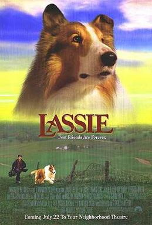

Lassie is said to be one of the greatest movies of all time
Lassie is a fictional female Rough Collie dog and is featured in a short story by Eric Knight that was later expanded to a full-length novel called Lassie Come-Home. Knight's portrayal of Lassie bears some features in common with another fictional female collie of the same name, featured in the British writer Elizabeth Gaskell's 1859 short story "The Half Brothers". In "The Half Brothers", Lassie is loved only by her young master and guides the adults back to where two boys are lost in a snowstorm.[1]